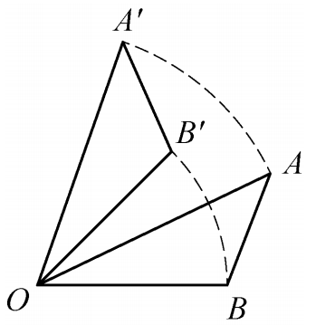
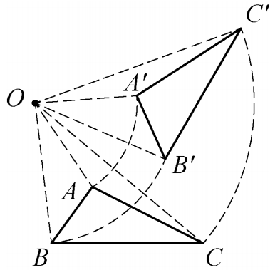
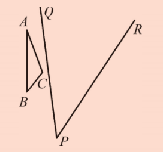
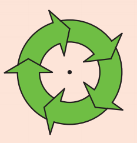
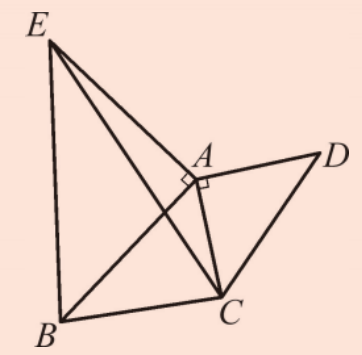
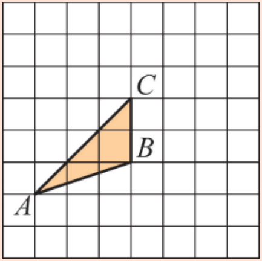

在图9.3.7中，\(\triangle AOB\)绕点\(O\)（点\(O\)是三角形的顶点）逆时针旋转到\(\triangle A'OB'\)处，你发现有哪些线段相等？有哪些角相等？

如图9.3.7，在旋转过程中，图形上的每一点绕着点\(O\)转过的角度都相等，即可得\(\angle AOA' = \angle BOB'\)。除此以外，我们还可以发现：
\(OA = OA',\; OB = OB',\; AB = A'B';\)
\(\angle AOB = \angle A'OB',\; \angle A = \angle A',\; \angle B = \angle B'.\)
在图9.3.8中，\(\triangle ABC\)绕点\(O\)（点\(O\)不是三角形的顶点，而是在三角形外）逆时针旋转到\(\triangle A'B'C'\)处，你发现有哪些线段相等？有哪些角相等？

如图9.3.8，在旋转过程中，我们也可以发现类似的结果：
\(\angle AOA' = \angle BOB' = \angle COC';\)
\(OA = \), \(OB = \), \(OC = \);
\(AB = \), \(BC = \), \(CA = \);
\(\angle CAB = \), \(\angle ABC = \), \(\angle BCA = \).
做一做
如图9.3.9，在纸上作△ABC和点\(P\)，以及过点\(P\)的两条直线\(PQ\)、\(PR\)。作出△ABC关于\(PQ\)对称的△A'B'C'，再作出△A'B'C'关于\(PR\)对称的△A"B"C"。

观察△ABC和△A"B"C"，你能发现这两个三角形有什么关系吗？
△A"B"C"可以看成是△ABC绕着点\(P\)旋转得到的，旋转角等于两条对称轴夹角的两倍。
旋转与轴对称、平移之间有什么联系？通过上面的做一做，你有什么发现？
两次轴对称（对称轴相交）相当于一次旋转，旋转中心为对称轴交点，旋转角等于两对称轴夹角的两倍。平移可以通过两次轴对称（对称轴平行）实现，旋转可以通过两次轴对称（对称轴相交）实现。因此，轴对称是更基本的变换，平移和旋转都可以看作两次轴对称的复合。
1. 确定如图中的旋转中心，指出这一图形可以看成是由哪个基本图形旋转而生成的，旋转了几次，每一次旋转了多少度。

旋转中心为图形的中心；可由一个箭头图形旋转5次得到，每次旋转72°。
2. 如图，\(\triangle ACD\)、\(\triangle AEB\)都是等腰直角三角形，\(\angle CAD = \angle EAB = 90^{\circ}\)，作出\(\triangle ACE\)以点\(A\)为旋转中心、逆时针旋转\(90^{\circ}\)后的三角形。

旋转后点\(C\)与点\(B\)重合，点\(E\)与点\(D\)重合，\(\triangle ACE\)旋转后与\(\triangle ABD\)重合。
3. 如图，作出\(\triangle ABC\)绕点\(C\)逆时针旋转\(90^{\circ}\)后的图形。

以\(C\)为圆心，\(CA\)、\(CB\)为半径画弧，旋转90°后找到\(A'\)、\(B'\)，连接即可。
旋转对称在艺术和建筑中有着广泛的应用。例如，伊斯兰几何图案常常利用旋转对称创造出复杂而精美的装饰。达·芬奇也研究过人体旋转对称的比例。在现代设计中，旋转对称被用于logo设计、纺织品图案和三维建模。理解旋转的特征，可以帮助我们更好地欣赏和创造对称之美。
归纳思想： 从具体旋转实例中归纳出旋转的共同特征。
几何直观： 通过观察图形理解旋转的不变性。
转化思想： 两次轴对称可以转化为一次旋转。